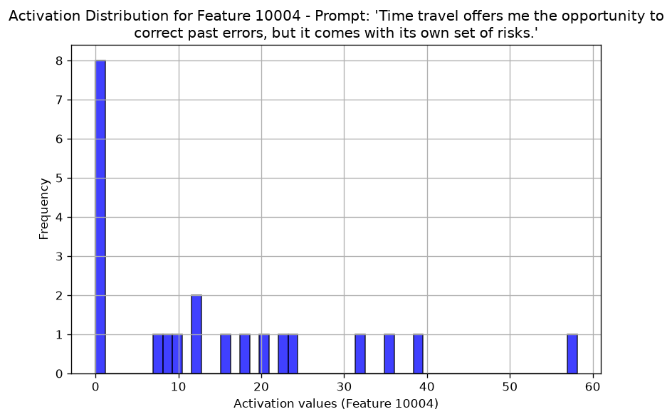
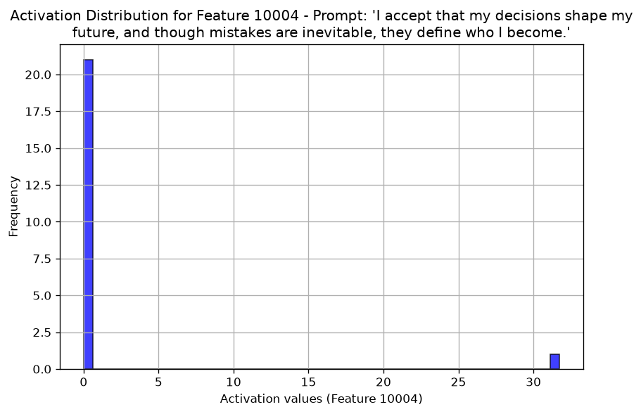

SAE 把 2304 維的 hidden state 乘上編碼矩陣，得到 16384 個預激活值，再用 JumpReLU 過濾：每個 feature 有自己的門檻（中位數 7.100，10004 號是 7.1234），沒超過門檻的一律輸出 0，所以 feature 的值不是 0 就是大於約 7。Q7.2–7.3 印出 prompt a 58.10、prompt b 31.74，但 b 的 31.74 來自 <bos> 那一格，b 的 21 個真正的 token 全是 0；而且 <bos> 的 hidden state 在兩句裡逐元素相同，這個數字和句子內容無關（R6）。另外，這個 SAE 是在 block 20 的輸出上訓練的，程式拿的卻是 hidden_states[20]，也就是 block 19 的輸出；換到正確的 [21]，重建誤差從 0.463 降到 0.279（R5）。
- 本章對應的原始碼：hw3.py:372–380（
load_sae）、:383–385（get_dashboard_html）、:388–406（get_max_activation）、:456–470（q7的前半，Q7.1–7.3）。sae-lens（載入與執行這些 SAE 的 Python 套件）5.11.0 的sae.py（encode_jumprelu、process_sae_in，雲端從 GitHub 的v5.11.0tag 逐字核對）。 - 本章的實測來自 hw3.py 的輸出（
logs/run_seed0.txt的 Q7 段，與兩張圖img/q7_max_activation_a.png、img/q7_max_activation_b.png），事實腳本docs/tools/hw03_facts.py的q7、ptit、pre_ch08段（logs/facts_q4_q7.txt、logs/facts_review1_ptit.txt、logs/facts_pre_ch08.txt），以及 Neuronpedia API 的原始回應logs/neuronpedia_feature_10004.json。log 在docs/HW03/logs/，圖在docs/HW03/img/。 - FACTS 指本機的事實清單
docs/HW03/FACTS.md；本章引的是「Q7 實測」「ch08 前置補測」與「ch08 pt 版 SAE 用在 it 模型上」三節。 - hidden_states 的 27 個索引與 block 編號的關係、
<bos>的範數表在第 0 章 0.9 節；Gemma Scope 的來歷、pt 與 it 的差別在Gemma 補充章 G.8 節；attention sink 在第 7 章 7.6 節。這一章只回指。R5、R6 是全書大綱的問題對照表的編號。 - Q7.4–7.9（逐 token、逐層）是第 9 章的範圍，這一章不講。
8.1 這一題要做什麼
投影片 p.24–27 是 Q7，分成九小題，這一章做前三題：
- Problem 7-1（p.24，0.5 分）：「Based on the Gemma Scope with Neuronpedia, What does feature 10004 mean? What does activations density mean? (You should choose EXACT 3 answers)」。要到 Neuronpedia 網站看 10004 號 feature 的說明，從選項裡選剛好 3 個。
- Problem 7-2、7-3（p.25，0.6 分）：兩句 prompt，a 是講時光旅行的「Time travel offers me the opportunity to correct past errors, but it comes with its own set of risks.」，b 是講接受自己的決定、和時光旅行無關的「I accept that my decisions shape my future, and though mistakes are inevitable, they define who I become.」。第 1 小題（0.2 分）問 SAE 在兩句上的最大 activation 哪個大，第 2 小題（0.4 分）問原因；提示是「You can use the activation distributions for each prompt to explain the result」，也就是看直方圖。
三題都是 Gradescope 上的選擇題，選項不在投影片與 Colab 裡。本書不編選項，也不把任何敘述寫成標準答案（理由見目錄頁第 1 節）；這一章講清楚每個數字從哪裡來、哪裡會誤導，並列出本機量到的數字。
hw3.py 的 Q7 前半對應原版 Colab 第 29–35 格（第 29 格是「## Q7: Observe the Activation Scores」標題，第 30 格註明程式改編自 Gemma 官方教學與 SAELens 的教學 notebook，第 31 格是 !pip install sae-lens）。和原版的差別：
- 安裝：
!pip install sae-lens拿掉了，套件由根目錄的pyproject.toml管理，而且釘在sae-lens<6（本機 5.11.0）。升到 6.x 時 Q7 會在 hw3.py:393 停下，見第 0 章 0.1 節。 - Q7.1：原版用
IPython.display.IFrame把 Neuronpedia 的網頁嵌進 notebook；hw3.py 是一般的 Python 腳本，沒有地方嵌網頁，改成印出網址（8.5 節）。 - SAE 搬到 GPU：原版每個函式開頭各自
sae.to(device)；hw3.py 由load_sae回傳前一次搬好（:380）。 - 不算梯度：hw3.py 在
get_max_activation上加了@torch.no_grad()（:388）；原版沒有，所以轉 numpy 前要.detach()。hw3.py 轉 numpy 前另外多一個.float()。 - 畫圖：
plt.show()改成存檔，多一個tag參數讓兩張圖分別存成q7_max_activation_a.png、q7_max_activation_b.png；標題加wrap=True讓長句換行。原版求最大值先設-float("inf")再取max，hw3.py 直接取.max()，結果相同。
8.2 稀疏自編碼器（SAE）是什麼
第 6 章看過，hidden state 是一個 2304 維的向量，模型在這一層「想到的所有東西」都疊加在這 2304 個數字裡。一個維度通常不對應一個人看得懂的概念。稀疏自編碼器（sparse autoencoder，SAE）想做的事是：找一組比 2304 多得多的方向（這裡是 16384 個，每個叫一個 feature），讓每個 hidden state 都能寫成「其中少數幾個方向的加權和」。理想上每個 feature 對應一個概念，例如 10004 號和時光旅行有關。
SAE 本身是兩個矩陣加一個門檻，和 Gemma 分開訓練。訓練目標大致是「重建得像，同時亮的 feature 要少」；Gemma Scope 的訓練細節本書沒有查證，這裡只講推論時怎麼用。對一個位置的 hidden state x（2304 維）：
- 編碼（encode）：pre = x · W_enc + b_enc，得到 16384 個預激活值；再經過 JumpReLU（8.4 節），大部分變成 0，剩下的就是 feature activation f（16384 維，大部分是 0）。
- 解碼（decode）：x̂ = f · W_dec + b_dec，用亮著的那幾個 feature 的方向（W_dec 的列）加權相加，重建回 2304 維。sae-lens 的
decode（sae.py:453–467，關鍵在 :458–459 的feature_acts @ self.W_dec + self.b_dec）就是這個式子。
Q7 的 SAE 有這些參數（logs/facts_q4_q7.txt 的 q7 段）：
| 參數 | 形狀 | 個數 | 用途 |
|---|---|---|---|
W_enc | (2304, 16384) | 37,748,736 | 編碼：每一行是一個 feature 的「偵測方向」 |
b_enc | (16384,) | 16,384 | 編碼的偏差，每個 feature 一個 |
threshold | (16384,) | 16,384 | JumpReLU 的門檻，每個 feature 一個 |
W_dec | (16384, 2304) | 37,748,736 | 解碼：每一列是一個 feature 寫回 hidden state 的方向 |
b_dec | (2304,) | 2,304 | 解碼的偏差 |
| 合計 | 75,532,544 | 全部 float32 |
75,532,544 個 float32，每個 4 bytes，是 302,130,176 bytes ≈ 0.28 GiB（計算值）。第 0 章 0.10 節量到跑完 Q7 後 GPU 記憶體多了約 0.29 GiB，就是這個 SAE。和 Gemma 本身的 26 億個參數比起來它很小，但寬度是 hidden state 的 16384 / 2304 ≈ 7.1 倍。
feature 10004 自己的參數（logs/facts_pre_ch08.txt）：門檻 7.1234、b_enc −2.2931、W_enc[:, 10004] 的長度 1.0315、W_dec[10004] 的長度 1.0000。解碼方向的長度剛好是 1，所以 feature 的值就是「沿這個方向加了多少」。
8.3 Q7 載入的這一個 SAE
def load_sae():
from sae_lens import SAE
sae, cfg_dict, sparsity = SAE.from_pretrained(
release="gemma-scope-2b-pt-res-canonical",
sae_id="layer_20/width_16k/canonical",
)
print(sae, cfg_dict, sparsity)
return sae.to(DEVICE)release 與 sae_id 的命名（2b-pt-res 是「2B、pt、residual stream」，width_16k 是約 16k 個 feature）在Gemma 補充章 G.8 節講過。residual stream 就是一層一層往下傳的那條 hidden state：每個 block 把自己算出的東西加到它上面再往下傳（第 0 章 0.6.1 節），所以「block 20 之後的 residual stream」就是 block 20 的輸出。sae-lens 5.x 的 SAE.from_pretrained 回傳三個值，:379 把三個一起印出來。hw3.py 印出的是（logs/run_seed0.txt 第 227–235 行，逐字）：
SAE(
(activation_fn): ReLU()
(hook_sae_input): HookPoint()
(hook_sae_acts_pre): HookPoint()
(hook_sae_acts_post): HookPoint()
(hook_sae_output): HookPoint()
(hook_sae_recons): HookPoint()
(hook_sae_error): HookPoint()
) {'architecture': 'jumprelu', 'd_in': 2304, 'd_sae': 16384, 'dtype': 'float32', 'model_name': 'gemma-2-2b', 'hook_name': 'blocks.20.hook_resid_post', 'hook_layer': 20, 'hook_head_index': None, 'activation_fn_str': 'relu', 'finetuning_scaling_factor': False, 'sae_lens_training_version': None, 'prepend_bos': True, 'dataset_path': 'monology/pile-uncopyrighted', 'context_size': 1024, 'dataset_trust_remote_code': True, 'apply_b_dec_to_input': False, 'normalize_activations': None, 'device': 'cpu', 'neuronpedia_id': 'gemma-2-2b/20-gemmascope-res-16k'} None
第一段是 SAE 模組本身：只有一個 ReLU() 和一排 HookPoint（sae-lens 留給使用者掛鉤子、攔截中間值的位置，Q7 沒用到）。參數不會印在這裡。第二段是 cfg_dict，最後的 None 是 sparsity（這個 release 沒有附 feature 的稀疏度統計）。cfg_dict 的重點：
| 欄位 | 值 | 意思 |
|---|---|---|
architecture | 'jumprelu' | 用 JumpReLU 決定 feature 亮不亮（8.4 節） |
d_in、d_sae | 2304、16384 | 輸入維度與 feature 數 |
dtype | 'float32' | SAE 的參數是 float32；Gemma 是 fp16，進 SAE 時會先轉型 |
model_name | 'gemma-2-2b' | 訓練 SAE 時用的是預訓練（pt）版，不是本作業的 gemma-2-2b-it（instruction-tuned，在 pt 上再微調成會對話的版本） |
hook_name、hook_layer | 'blocks.20.hook_resid_post'、20 | SAE 在 block 20（0 起算）之後的 residual stream 上訓練，也就是 block 20 的輸出 |
dataset_path | 'monology/pile-uncopyrighted' | 訓練 SAE 用的文字資料集（Hugging Face 上的資料集名稱） |
context_size、prepend_bos | 1024、True | 依欄位名稱解讀：訓練時每段 1024 個 token，前面加 <bos> |
apply_b_dec_to_input | False | 編碼前不先減 b_dec（8.4 節的 process_sae_in） |
normalize_activations | None | 不對輸入做額外的縮放 |
device | 'cpu' | 載入時在 CPU；:380 的 sae.to(DEVICE) 才搬到 GPU，cfg 裡的這一欄沒有跟著變 |
neuronpedia_id | 'gemma-2-2b/20-gemmascope-res-16k' | Neuronpedia 上這個 SAE 的代號，Q7.1 的網址用的就是它 |
兩個欄位要特別記住，它們分別是本章兩個問題的伏筆：
model_name = 'gemma-2-2b'：SAE 是在 pt 模型上訓練的，這裡套在 it 模型上。本書實測過三句話在兩個模型上的差別，結論是數值會變、結論不變，細節與數字在Gemma 補充章 G.8 節，這裡不重複。hook_layer = 20：sae-lens 的意思是「block 20」。hw3.py 卻把它直接拿去當hidden_states的索引，差了一層（8.8 節）。
8.4 JumpReLU：每個 feature 有自己的門檻
架構是 jumprelu 時，sae-lens 把 sae.encode 指到 encode_jumprelu（sae.py:172–174）。它的全文（sae-lens 5.11.0，sae_lens/sae.py:417–430，逐字）：
def encode_jumprelu(
self, x: Float[torch.Tensor, "... d_in"]
) -> Float[torch.Tensor, "... d_sae"]:
"""
Calculate SAE features from inputs
"""
sae_in = self.process_sae_in(x)
# "... d_in, d_in d_sae -> ... d_sae",
hidden_pre = self.hook_sae_acts_pre(sae_in @ self.W_enc + self.b_enc)
return self.hook_sae_acts_post(
self.activation_fn(hidden_pre) * (hidden_pre > self.threshold)
)
第一步 process_sae_in（同一個檔案 sae.py:444–451，逐字）：
def process_sae_in(
self, sae_in: Float[torch.Tensor, "... d_in"]
) -> Float[torch.Tensor, "... d_sae"]:
sae_in = sae_in.to(self.dtype)
sae_in = self.reshape_fn_in(sae_in)
sae_in = self.hook_sae_input(sae_in)
sae_in = self.run_time_activation_norm_fn_in(sae_in)
return sae_in - (self.b_dec * self.cfg.apply_b_dec_to_input)
逐行對照這個 SAE 的設定：
sae_in.to(self.dtype)：fp16 的 hidden state 在這裡轉成 float32，所以輸出的 feature activation 也是 float32。reshape_fn_in、hook_sae_input、run_time_activation_norm_fn_in：對 residual stream 的 SAE、normalize_activations是 None 的情況，這三步不改變數值（本機手算與sae.encode的結果一致，見下文）。- 最後一行減
b_dec × apply_b_dec_to_input。apply_b_dec_to_input是 False，乘起來是 0，等於沒減。 hidden_pre = sae_in @ W_enc + b_enc：16384 個預激活值。對 feature 10004 來說，就是 x 和W_enc[:, 10004]的內積加 −2.2931。- 最後一行：
activation_fn是印出來看到的那個ReLU()，再乘上(hidden_pre > threshold)，一個 True／False 的遮罩。這個遮罩才是 JumpReLU 的關鍵：預激活沒超過門檻的 feature，乘上 False 變成 0。
所以模組印出來是 ReLU()，實際的函數卻是 ReLU 再乘門檻遮罩。整理成三種情況：
- pre ≤ 0：ReLU 就是 0。
- 0 < pre ≤ 門檻：一般的 ReLU 會保留，JumpReLU 輸出 0。這一條是 JumpReLU 的定義，不是 ReLU 的行為。
- pre > 門檻：原樣輸出 pre。
值從 0「跳」到門檻以上，中間沒有過渡，這就是名字裡的 jump。結果是：一個 feature 的值不是 0，就是大於它的門檻。這個 SAE 16384 個門檻最小 4.516、中位數 7.100、最大 30.226，10004 號是 7.1234（logs/facts_q4_q7.txt）。所以 Q7 的表裡看不到 0 到 7.1 之間的值：8.6 節 prompt a 最小的非零值是 7.47。門檻全部大於 0，所以通過遮罩的 pre 一定是正的，ReLU 在這裡其實不會再改變任何值（由這些數字推出）。
本機用 prompt c（「Time travel will become a reality as technology continues to advance.」，Q7.4 以後用的句子）手算 feature 10004 的預激活，再和 sae.encode 比對，兩者一致（logs/facts_pre_ch08.txt，by hand == sae.encode: True）。hidden_states[20]（hw3.py 用的位置）上 13 個 token 的結果：
| token | 預激活 pre | 輸出 | 情況 |
|---|---|---|---|
<bos> | 31.742 | 31.7425 | 保留 |
Time | 2.637 | 0 | > 0 但低於門檻 |
▁travel | 58.063 | 58.0631 | 保留 |
▁will | 11.329 | 11.3290 | 保留 |
▁become | 9.600 | 9.5996 | 保留 |
▁a | 13.457 | 13.4574 | 保留 |
▁reality | −0.681 | 0 | ≤ 0 |
▁as | 3.201 | 0 | > 0 但低於門檻 |
▁technology | −4.915 | 0 | ≤ 0 |
▁continues | −10.540 | 0 | ≤ 0 |
▁to | 0.051 | 0 | > 0 但低於門檻 |
▁advance | −6.890 | 0 | ≤ 0 |
. | 11.205 | 11.2049 | 保留 |
hidden_states[20] 上的預激活當例子（logs/facts_pre_ch08.txt；token 前面的 ▁ 省略）。▁travel 的 58.06 超出刻度，畫在斷軸之後；<bos> 的 31.74 沒有畫。門檻的效果有多大？把 16384 個 feature 全部算進來（不含 <bos>，每個 token 平均）：在 hidden_states[20] 上，預激活大於 0、一般 ReLU 會留下的有 354.6 個，JumpReLU 只留下 60.9 個；在 SAE 本來的位置 [21] 上是 603.5 個對 88.2 個（logs/facts_pre_ch08.txt）。差 5–7 倍。「稀疏」主要是門檻做到的。
8.5 Q7.1：到 Neuronpedia 查 feature 10004
一個 feature 代表什麼，SAE 本身不會告訴你。Neuronpedia 是公開的 SAE feature 瀏覽網站：對每個 feature 列出讓它最亮的文字片段、它對輸出 token 的影響，以及用語言模型自動產生的解釋。Q7.1 要你去那裡看 10004 號。原版 Colab 第 33 格把網頁嵌進 notebook：
from IPython.display import IFrame
html_template = "https://neuronpedia.org/{}/{}/{}?embed=true&embedexplanation=true&embedplots=true&embedtest=true&height=300"
def get_dashboard_html(sae_release = "gemma-2-2b", sae_id="20-gemmascope-res-16k", feature_idx=0):
return html_template.format(sae_release, sae_id, feature_idx)
########################## TODO (Q7.1) ############################
html = get_dashboard_html(sae_release = "gemma-2-2b", sae_id="20-gemmascope-res-16k", feature_idx=10004)
IFrame(html, width=1200, height=600)
###################################################################
hw3.py 保留同一個函式，改成印出網址：
def get_dashboard_html(sae_release="gemma-2-2b", sae_id="20-gemmascope-res-16k", feature_idx=0):
html_template = "https://neuronpedia.org/{}/{}/{}?embed=true&embedexplanation=true&embedplots=true&embedtest=true&height=300"
return html_template.format(sae_release, sae_id, feature_idx)def q7(tokenizer, model, args):
sae = load_sae()
feature_idx = 10004
########################## TODO (Q7.1) ############################
print(f"[Q7.1] Open in browser: {get_dashboard_html(feature_idx=feature_idx)}")
###################################################################網址的三段是模型（gemma-2-2b）、SAE（20-gemmascope-res-16k，和 cfg 的 neuronpedia_id 一致）、feature 編號；後面的 embed=true… 參數原本是給嵌入用的。hw3.py 印出的是（logs/run_seed0.txt 第 236 行，逐字）：
[Q7.1] Open in browser: https://neuronpedia.org/gemma-2-2b/20-gemmascope-res-16k/10004?embed=true&embedexplanation=true&embedplots=true&embedtest=true&height=300
把這個網址貼到瀏覽器裡看。網頁的版面會改版，本書不描述畫面；下面引的是本機在 2026-10-04 從 Neuronpedia 的 API（https://www.neuronpedia.org/api/feature/gemma-2-2b/20-gemmascope-res-16k/10004）抓下來的原始資料，存在 logs/neuronpedia_feature_10004.json，和網頁顯示的是同一份資料（推論：網頁與 API 同源，畫面本書沒有逐項核對）。
| 欄位 | 內容 |
|---|---|
自動解釋（explanations，5 條） | words related to time travel.、concepts related to time travel and movement across dimensions or timelines.、words related to time travel and its consequences、Time, space, and dimensional travel、travel through dimensions。分別由 gemini-1.5-pro、claude-3-5-sonnet-20240620、gpt-4o-mini、gemini-2.0-flash、gemini-2.5-flash-lite 產生（JSON 的 explanationModelName） |
frac_nonzero | 0.0035 |
maxActApprox | 125.441；最亮的例子是 …with the power to travel 的 ▁travel |
正向 logit 最大的 token（pos_str／pos_values） | ▁dimension 1.077、▁dimensional 0.983、▁space 0.921、▁dimensions 0.917、▁Dimension 0.917、dimension 0.914、dimensional 0.895、▁portal 0.893、▁tele 0.889、▁Time 0.874 |
負向 logit 最大的 token（neg_str） | ReusableCell、ArgsConstructor、BeginContext… 一串程式碼裡的識別字 |
modelId | gemma-2-2b（pt 版） |
幾個欄位怎麼讀：
- 自動解釋：網站讓語言模型看這個 feature 最亮的那些文字片段，寫一句描述。5 條都和 time travel、穿越維度有關。它們是模型寫的，不是人寫的定義，可以當成參考。
- activation density（
frac_nonzero）：在 Neuronpedia 取樣的大量 token 裡，有多少比例會讓這個 feature 非零。0.0035 就是 0.35%，平均約 286 個 token 才亮一次（計算值）。這是「一個 feature、很多 token」的比例；不要和 L0（「一個 token、很多 feature」，8.8 節）搞混。 - maxActApprox：網站見過的最大值，約 125。這是 pt 模型上的值（
modelId是gemma-2-2b），Q7 的數字來自 it 模型，而且 hw3.py 還用了另一層（R5），所以兩者的大小不能直接比。 - 正向 logit：如果這個 feature 亮了、把
W_dec[10004]加進 hidden state，模型的輸出會偏向哪些 token。本機自己算過一次：把W_dec[10004]乘上 it 模型的詞表矩陣（Gemma 的 embedding 與輸出層共用同一個矩陣），不經過最後的 norm 與 soft-cap（Gemma 2 在最後 logits 上做的一步壓縮，上限 30，第 0 章 0.5 節的 config 表），前 12 名是▁dimension0.315、▁dimensional0.299、▁dimensions0.278、▁Dimension0.271、▁portal0.269、dimension0.268、dimensional0.265、▁multiverse0.264、▁space0.264、▁tele0.262、▁Dimensional0.256、▁Dimensions0.255（logs/facts_pre_ch08.txt）。排序和 Neuronpedia 相近，數值尺度不同；Neuronpedia 用哪個模型、有沒有經過 norm 來算，本機沒有查證。注意這是近似：feature 在 block 20，後面還有 block 21–25，這樣直接乘詞表矩陣等於假設後面的層不改變這個方向的作用。它只看「直接寫到輸出」的那一部分，所以只適合用來比排序，不是模型實際的輸出機率。
值得注意的是「讀進來」和「寫出去」不完全一樣：讓它亮的是 time travel 這類文字，它推向的輸出卻以 dimension、portal 為主。Q7.1 要選的三個敘述，就要從這些資料裡判斷；選項在 Gradescope，這裡不列。
8.6 Q7.2–7.3：兩句話的最大值
@torch.no_grad()
def get_max_activation(model, tokenizer, sae, prompt, feature_idx=10004, tag=""):
tokens = tokenizer.encode(prompt, return_tensors="pt").to(model.device)
outputs = model(tokens, output_hidden_states=True)
hidden_states = outputs.hidden_states[sae.cfg.hook_layer]
feature_acts = sae.encode(hidden_states).squeeze()
feature_acts = feature_acts.reshape(-1, feature_acts.shape[-1])
max_activation = feature_acts[:, feature_idx].max().item()
plt.figure(figsize=(8, 5))
plt.hist(feature_acts[:, feature_idx].float().cpu().numpy(), bins=50, alpha=0.75, color="blue", edgecolor="black")
plt.xlabel(f"Activation values (Feature {feature_idx})")
plt.ylabel("Frequency")
plt.title(f"Activation Distribution for Feature {feature_idx} - Prompt: '{prompt}'", wrap=True)
plt.grid(True)
save_fig(f"q7_max_activation_{tag}.png")
return max_activation逐段讀：
- :390：
tokenizer.encode預設會在前面加<bos>。prompt a 與 b 都切成 22 個 token：<bos>加上 21 個字詞 token。 - :391：一次 forward，
output_hidden_states=True拿到 27 個 hidden state（第 0 章 0.9 節）。 - :393：取
hidden_states[sae.cfg.hook_layer]，也就是[20]，形狀 (1, 22, 2304)。這一行是 R5（8.8 節）。 - :394–395：
sae.encode得到 (1, 22, 16384)；.squeeze()拿掉 batch 那一維變成 (22, 16384)；reshape(-1, 16384)保證是二維（batch 只有一句時不改變形狀）。 - :397：
feature_acts[:, feature_idx]取 22 個 token 在 10004 號的值，再取最大。這 22 個裡包括<bos>，這一行是 R6（8.7 節）。 - :399–405：把同樣 22 個值畫成 50 格的直方圖，存成
q7_max_activation_{tag}.png。
######################## (Q7.2 ~ 7.3) ########################
prompt_a = "Time travel offers me the opportunity to correct past errors, but it comes with its own set of risks."
prompt_b = "I accept that my decisions shape my future, and though mistakes are inevitable, they define who I become."
max_activation_a = get_max_activation(model, tokenizer, sae, prompt_a, feature_idx, tag="a")
max_activation_b = get_max_activation(model, tokenizer, sae, prompt_b, feature_idx, tag="b")
print(f"max_activation for prompt_a: {max_activation_a}")
print(f"max_activation for prompt_b: {max_activation_b}")hw3.py 印出的是（logs/run_seed0.txt 第 237–240 行，逐字；本機的絕對路徑改寫成相對路徑）：
[saved] HW03/outputs/q7_max_activation_a.png [saved] HW03/outputs/q7_max_activation_b.png max_activation for prompt_a: 58.10378646850586 max_activation for prompt_b: 31.740745544433594
a 是 58.10，b 是 31.74。光看這兩個數字，「講時光旅行的句子比較大」好像很合理；但 b 不是時光旅行的句子，為什麼還有 31.74？要看每個 token 的值。本機把兩句的 22 個值都印出來（logs/facts_q4_q7.txt 的 q7 段；[21] 那一欄是 8.8 節要用的對照）：
| # | prompt a 的 token | hw3.py 的 [20] | [21] |
|---|---|---|---|
| 0 | <bos> | 31.74 | 30.95 |
| 1 | Time | 0 | 0 |
| 2 | ▁travel | 58.10 | 71.27 |
| 3 | ▁offers | 0 | 10.34 |
| 4 | ▁me | 0 | 7.16 |
| 5 | ▁the | 7.47 | 11.08 |
| 6 | ▁opportunity | 0 | 11.69 |
| 7 | ▁to | 39.07 | 35.91 |
| 8 | ▁correct | 19.93 | 18.29 |
| 9 | ▁past | 8.24 | 9.70 |
| 10 | ▁errors | 0 | 0 |
| 11 | , | 24.10 | 23.91 |
| 12 | ▁but | 12.41 | 26.05 |
| 13 | ▁it | 17.45 | 22.12 |
| 14 | ▁comes | 0 | 0 |
| 15 | ▁with | 15.28 | 23.39 |
| 16 | ▁its | 0 | 7.46 |
| 17 | ▁own | 11.78 | 20.85 |
| 18 | ▁set | 0 | 0 |
| 19 | ▁of | 22.55 | 36.36 |
| 20 | ▁risks | 9.45 | 12.09 |
| 21 | . | 35.94 | 58.44 |
prompt a：22 個 token 裡 14 個非零（含 <bos>），最大的是 ▁travel 的 58.10，其次是 ▁to 39.07、. 35.94、<bos> 31.74、, 24.10。有趣的是 Time 本身是 0，而 ▁to、,、▁of 這些和時光旅行無關的字反而亮。一個解讀是：模型讀到「Time travel」之後，後面的位置都帶著「這句話在講時光旅行」的資訊，所以 feature 在整句的後半持續亮著。這是推論，本機沒有另外驗證。
prompt b 簡單得多：22 個 token 裡只有 <bos> 非零（31.74），其他 21 個全是 0，[20] 和 [21] 都一樣（同一份 log）。所以 b 的最大值 31.74，就是 <bos> 的值。
兩張直方圖就是這 22 個值的分布：

q7_max_activation_a.png（prompt a）。0 那一格是 8 個 token；其餘 14 個值散在約 7 到 58 之間，最右邊的一格是 ▁travel。0 和約 7 之間是空的，這是 JumpReLU 的門檻造成的（8.4 節）。
q7_max_activation_b.png（prompt b）。21 個 token 堆在 0；最右邊、約 31.7 的那一格只有 1 個，就是 <bos>。注意兩張圖的 x 軸範圍不同（a 到約 60、b 到約 33），不能直接疊在一起比長條的位置。投影片的提示要你「用直方圖解釋」，直方圖確實看得出 b 的分布幾乎全是 0、只有一個孤立的值；但圖上不會告訴你那一個值是哪個 token。要知道它是 <bos>，得像上表一樣逐 token 印出來。
8.7 <bos> 有很大的 SAE activation
prompt b 的 31.74 不只是「來自 <bos>」，而且和 b 的內容完全無關。本機比對了兩句在 hidden_states[20] 第 0 個位置（<bos>）的向量：2304 個數字逐元素完全相同，最大差是 0.0；feature 10004 在兩句的 <bos> 上都是 31.7407（logs/facts_pre_ch08.txt）。
原因是 causal attention：每個位置只能看自己和前面的位置。第 0 個位置前面沒有東西，它在每一層都只看得到自己，不論後面接的是哪一句話，算出來的 hidden state 都一樣。所以 a 與 b 的 <bos> 都是 31.74，任何以 <bos> 開頭的句子在這裡都會得到差不多的值。
「差不多」而不是「完全一樣」：prompt c 只有 13 個 token，它的 <bos> 是 31.7425，和 a、b 差 0.002。數學上第 0 個位置的結果和序列長度無關，差異來自 fp16 運算：浮點數加法換了順序，捨入誤差就不同（(a + b) + c 不一定等於 a + (b + c)）；序列長度不同時，GPU 把矩陣運算切塊、加總的方式可能跟著不同（推論，本機沒有追到是哪一個運算）（補充章 K.8.1 節是同一類現象）。a 和 b 剛好都是 22 個 token，才會逐元素相同。不要說成「所有句子的 <bos> 都完全一樣」。
為什麼 <bos> 會讓一個「時光旅行」feature 亮到 31？本機沒有答案。可以和前面量到的兩件事放在一起看：<bos> 的 hidden state 範數在 [20] 約是其他 token 的 9 倍（第 0 章 0.9 節：3731.5 對 397.2）；各層一半以上的注意力流向 <bos>（第 7 章 7.6 節）。<bos> 的向量很特別，SAE 對它的輸出看起來不代表語意。範數大、被大量注意、SAE activation 大，三者可能是同一個現象的不同面向；這是推論，本機沒有證明它們的因果關係。FVU 與 L0（8.8 節）都排除了 <bos> 再算，也是這個原因。
8.8 SAE 要的是哪一層（R5）
hidden_states 的索引比 block 編號大 1：[0] 是 embedding，[i] 是第 i − 1 個 block（0 起算）的輸出（第 0 章 0.9 節）。SAE 的 hook_name 是 blocks.20.hook_resid_post，block 20 的輸出，對應 hidden_states[21]。hw3.py:393 卻寫 hidden_states[sae.cfg.hook_layer] = hidden_states[20]，拿到的是 block 19 的輸出。這一行不受任何旗標控制：--sae-layer-idx 只影響 Q7.4–7.6（第 9 章）。本機用 .venv/bin/python HW03/hw3.py --q 7 --sae-layer-idx 21 --token-idx 1 2 3 跑（後兩個旗標是第 9 章用的），Q7.2–7.3 印出的仍是 58.10378646850586 與 31.740745544433594（logs/run_q7_layer21_tok123.txt 第 19–20 行）。
差一層有多大影響？先定義兩個量 SAE 好壞的數字（都排除 <bos>，算法在 docs/tools/hw03_facts.py）：
- FVU（fraction of variance unexplained，未解釋的變異比例）：把一句話每個 token 的 x 和重建出來的 x̂ 相減，誤差的平方和，除以「x 和這句話所有 token 的平均向量」的差的平方和。0 代表完美重建；1 代表重建得和「每個位置都猜平均值」一樣差。
- L0：每個 token 平均有幾個 feature 非零。
本機在兩個位置上各算一次（logs/facts_q4_q7.txt 的 q7 段）：
| prompt | hidden_states 索引 | 10004 的最大值（位置） | FVU | L0 |
|---|---|---|---|---|
| a | [20]（hw3.py，block 19 的輸出） | 58.10（▁travel） | 0.463 | 58.4 |
| a | [21]（SAE 的位置，block 20 的輸出） | 71.27（▁travel） | 0.279 | 89.0 |
| b | [20] | 31.74（<bos>） | 0.463 | 63.5 |
| b | [21] | 30.95（<bos>） | 0.296 | 91.0 |
| c | [20] | 58.06（▁travel） | 0.458 | 60.9 |
| c | [21] | 71.23（▁travel） | 0.290 | 88.2 |
三句都一樣：換到正確的 [21]，FVU 從約 0.46 降到 0.28–0.30，SAE 重建得好很多；L0 從約 58–64 變成約 88–91。prompt a 的最大值從 58.10 變成 71.27，仍然在 ▁travel；8.6 節那張表的 [21] 欄也看得出更多 token 亮起來。
有兩點要注意。第一，[20] 的 FVU 0.46 並沒有爛到不能用，block 19 和 block 20 的輸出本來就很接近（相鄰兩層，residual stream 只多加了一層的東西；推論），所以 hw3.py 的定性結論不變：a 在 ▁travel 最亮。第二，修好 R5 不會修好 R6：在 [21] 上，b 的真正 token 仍然全是 0，最大值仍然是 <bos> 的 30.95。兩個問題要分開處理。
SAE 是在 pt 模型上訓練的，這裡的 hidden state 來自 it 模型；這對 FVU 的影響（在 [21] 上 it 比 pt 高約 0.05，logs/facts_review1_ptit.txt）在Gemma 補充章 G.8 節。至於把 SAE 拿去量其他層（Q7.4–7.9）會怎樣，是第 9 章的主題。
8.9 讀 code 不盡信文件
讀 code 不盡信文件：R5 hidden_states 的索引差一
程式做的：hw3.py:393 與原版 Colab 第 35 格都寫 outputs.hidden_states[sae.cfg.hook_layer]。hook_layer 是 20，指的是 block 20；但 hidden_states[20] 是 block 19 的輸出，block 20 的輸出在 [21]（8.8 節）。
後果：SAE 量的是它沒訓練過的那一層。prompt a 的最大值 58.10（正確的位置是 71.27），重建誤差 FVU 0.463（正確的位置是 0.279），L0 58.4（正確的位置 89.0）。定性結論（a 在 ▁travel 最亮、b 的字詞全是 0）不變。
正確的寫法（本書的示意，不在 hw3.py 裡）：把 :393 改成 hidden_states = outputs.hidden_states[sae.cfg.hook_layer + 1]。事實腳本在 [21] 上量到的就是上面那些數字；本機也把 hw3.py 的複本照這樣改完重跑過，印出 max_activation for prompt_a: 71.27471160888672（logs/review_ch08.txt）。hw3.py 為了和助教的參考答案一致，保留原版的寫法。
為什麼文件看不出來：hook_layer 這個名字看起來就是「第幾層」，而 hidden_states 也是一層一個。差別在 hidden_states[0] 是 embedding，不是任何一個 block 的輸出；只有讀 hook_name 的 resid_post，再對照 hidden_states 的定義，才看得出差一。
讀 code 不盡信文件：R6 prompt b 的最大值來自 <bos>
程式做的：hw3.py:397 與原版 Colab 第 35 格對 22 個位置取最大值，包括第 0 個位置 <bos>。
後果：prompt b 印出 31.74，看起來 b 也有一點「時光旅行」；其實 b 的 21 個字詞 token 全是 0，31.74 是 <bos> 的值。而且 a、b 的 <bos> hidden state 逐元素相同，這個數字和句子內容無關（8.7 節）。「比較兩句的最大值」時，b 的數字是假訊號；a 的 58.10 不受影響，因為它在 ▁travel，比 <bos> 的 31.74 大。
正確的寫法（本書的示意）：把 :397 改成 max_activation = feature_acts[1:, feature_idx].max().item()，跳過第 0 個位置。本機在 [20] 上量到排除 <bos> 後的最大值：a 58.1038、b 0.0000（logs/facts_q4_q7.txt 的 max excl <bos>）。直方圖要同樣排除第 0 個位置，就把 :400 的 feature_acts[:, feature_idx] 也改成 feature_acts[1:, feature_idx]。本機把 hw3.py 的複本照這兩處改完重跑過，印出 max_activation for prompt_b: 0.0（logs/review_ch08.txt）；hw3.py 本身沒有改。
為什麼文件看不出來：投影片的提示叫你看直方圖，直方圖只畫出 b 有一個孤立的值，不會標出它是哪個 token。tokenizer.encode 自動加 <bos> 這件事，也不在 :390 那一行上看得到。
8.10 動手做
自己跑 Q7.1–7.3
1. 跑 Q7（在 repo 根目錄；需要 GPU 與 HF 授權，見目錄頁 3.2 節；Q7 沒有隨機性，不需要 --seed）：
.venv/bin/python HW03/hw3.py --q 7
第一次執行時 sae-lens 會從 Hugging Face 下載 SAE；之後從快取載入，Q7 本身約 2.5 秒（第 0 章 0.10 節，含載入 SAE、不含載入 Gemma）。輸出依序是：SAE(...) 與 cfg_dict（8.3 節那一大段）、[Q7.1] Open in browser: …、兩行 [saved] …/HW03/outputs/q7_max_activation_a.png 與 _b.png、兩行 max_activation。中間可能夾著 HybridCache 的 deprecation 訊息，可以忽略（第 0 章 0.1 節）。接著還會跑 Q7.4–7.9 並印出更多數字、存更多圖，那是第 9 章的內容。本機單獨跑 --q 7（加上第 9 章用的旗標）與跑全部題目，兩個 max_activation 都是 58.10378646850586 與 31.740745544433594（logs/run_q7_layer21_tok123.txt、logs/run_seed0.txt）。
2. 看 Neuronpedia 的原始資料（在 repo 根目錄；不需要 GPU）：把第 1 步印出的網址貼到瀏覽器。或者直接讀本機存下的 API 回應：
python3 -c "import json; d = json.load(open('docs/HW03/logs/neuronpedia_feature_10004.json')); print(d['frac_nonzero'], d['maxActApprox']); print(d['pos_str'][:5])"
應該印出 0.0035 125.441 與 ['▁dimension', '▁dimensional', '▁space', '▁dimensions', '▁Dimension']。d['explanations'] 是 5 條自動解釋，每條的 description 是文字、explanationModelName 是寫它的模型。
3. JumpReLU 手算與 <bos> 的比對（事實腳本，在 repo 根目錄，會載入模型與 SAE，約 5 秒；結果印在終端機）：
.venv/bin/python docs/tools/hw03_facts.py pre_ch08
輸出格式就是 logs/facts_pre_ch08.txt：feature 10004 的參數、prompt c 在 [20] 與 [21] 上每個 token 的預激活與三種情況（kept、pre>0 but below threshold、pre<=0）、ReLU 與 JumpReLU 各留下幾個 feature、a 與 b 的 <bos> 比對（max|a - b| = 0.0），以及 W_dec[10004] 投影到詞表的前 12 名。要看 8.6、8.8 節兩張表的數字，改跑 q7 段（.venv/bin/python docs/tools/hw03_facts.py q7，輸出就是 logs/facts_q4_q7.txt 的 q7 段）。
4. 自己修 R5、R6：照 8.9 節兩個框的示意改 hw3.py:393、:397 與 :400，再跑第 1 步。依事實腳本在同樣的 hidden state 上量到的值（logs/facts_q4_q7.txt 的 q7 段），兩行 max_activation 應該是（本機把 hw3.py 的複本照字面改完、三種組合各跑一次，logs/review_ch08.txt）：只修 R5（:393）時 a 是 71.27471160888672、b 是 30.95028305053711（仍是 <bos>）；只修 R6（:397、:400）時 a 是 58.10378646850586、b 是 0.0；兩個都修時 a 是 71.27471160888672、b 是 0.0。 Q7.4–7.9 不受影響（它們不經過 get_max_activation）。兩張直方圖會覆蓋 HW03/outputs/ 裡同名的檔案；做完把 hw3.py 改回來，再跑一次第 1 步，原本的圖就回來了。
8.11 常見錯誤
把 b 的 31.74 當成「b 也有一點時光旅行」
- 症狀
- 「b 的最大值是 a 的一半多，所以 b 也有點相關」。
- 後果
- 那是
<bos>的值，b 的 21 個字詞 token 全是 0（R6）。 - 正解
- 逐 token 看，或排除第 0 個位置再取最大值：b 是 0。
以為所有句子的 <bos> 都完全一樣
- 症狀
- 知道 a、b 的
<bos>逐元素相同後，推廣成「任何句子都一樣」。 - 後果
- prompt c（13 個 token）的
<bos>是 31.7425，和 a、b 的 31.7407 差 0.002。 - 正解
- 數學上相同，數值上會有 fp16 運算順序造成的微差；a、b 剛好同長度才逐元素相同。
把 hook_layer 當成 hidden_states 的索引
- 症狀
- 「SAE 是第 20 層的，所以拿
hidden_states[20]」。 - 後果
- 拿到 block 19 的輸出，FVU 0.463 而不是 0.279（R5）。
- 正解
- block k 的輸出是
hidden_states[k + 1]；SAE 要的是[21]。
以為 JumpReLU 就是 ReLU
- 症狀
- 看到
print(sae)印出ReLU()，就以為小的正數會保留。 - 後果
- 預料表裡會有 0 到 7 之間的值，卻一個都找不到。
- 正解
encode_jumprelu再乘上hidden_pre > threshold；低於門檻輸出 0，這是 JumpReLU 的定義。
把 activation density 和 L0 混為一談
- 症狀
- 「frac_nonzero 0.0035 表示每個 token 只有 0.35% 的 feature 亮」。
- 後果
- 搞錯方向。
- 正解
frac_nonzero是「這一個 feature 在多少比例的 token 上非零」；L0 是「這一個 token 有幾個 feature 非零」。
拿 Neuronpedia 的 125 和 Q7 的 58 直接比
- 症狀
- 「我們的句子只有最大值的一半，所以不太像時光旅行」。
- 後果
- Neuronpedia 是 pt 模型、SAE 本來的那一層；Q7 是 it 模型，而且 hw3.py 用了前一層。
- 正解
- 只在同一個設定下比較數值；跨設定只比定性的結論。
本章小結
- SAE 把 2304 維的 hidden state 編碼成 16384 個 feature，再解碼回 2304 維；Q7 的這一個有 75,532,544 個 float32 參數（約 0.28 GiB），在 pt 模型的 block 20 輸出上訓練。
- JumpReLU = ReLU × (pre > 門檻)。每個 feature 有自己的門檻（中位數 7.100，10004 號 7.1234），低於門檻輸出 0，所以值不是 0 就是大於約 7；ReLU 會留 354.6 個，JumpReLU 只留 60.9 個。
- Q7.1：hw3.py 印出 Neuronpedia 的網址；10004 號的自動解釋都和時光旅行、穿越維度有關，
frac_nonzero是 0.0035。 - Q7.2–7.3：a 58.10（
▁travel）、b 31.74。b 的 31.74 來自<bos>，21 個字詞 token 全是 0；a、b 的<bos>逐元素相同，和內容無關（R6）。 - R5：hw3.py 拿
hidden_states[20]（block 19 的輸出），SAE 要的是[21]；換過去 FVU 0.463 → 0.279、a 的最大值 58.10 → 71.27。修好 R5 不會修好 R6。
下一章是 Q7 的後半：同一個 SAE、同一個 feature，改成看 prompt c 的每一個 token（Q7.4–7.6），再看同一個 token 在 hidden_states 的 27 個索引上怎麼變化（Q7.7–7.9）。那裡會把這個只在 block 20 校正過的 SAE 拿去量別的層，投影片說的「layer 24」也和程式的意思不一樣（S4，全書大綱對照表裡「投影片與程式不一致」的第 4 條）；最後一個索引的值為什麼會掉下去，也在那裡處理。
自我測驗
1. feature 10004 的門檻是 7.1234。某個 token 的預激活是 3.2，它的 feature 值是多少？如果是一般的 ReLU 呢？
JumpReLU 輸出 0，因為 3.2 沒有超過門檻（prompt c 的 ▁as 在 [20] 上就是這樣）。一般的 ReLU 會輸出 3.2。這就是 Q7 的表裡看不到 0 到 7 之間的值的原因。
2. hw3.py 印出 prompt b 的最大值 31.74。這個數字來自哪裡？為什麼和 b 的內容無關？
來自第 0 個位置 <bos>，b 的其他 21 個 token 全是 0。causal attention 下第 0 個位置只看得到自己，所以它的 hidden state 不受後面句子影響；本機量到 a、b 的 <bos> 向量逐元素相同，10004 號都是 31.7407。
3. SAE 的 hook_name 是 blocks.20.hook_resid_post。應該拿 hidden_states 的哪一個索引？hw3.py 拿的是哪一個？
應該拿 [21]：hidden_states[0] 是 embedding，[i] 是 block i − 1 的輸出，所以 block 20 的輸出在 [21]。hw3.py 用 hidden_states[sae.cfg.hook_layer]，也就是 [20]，block 19 的輸出（R5）。
4. 把 R5 修好（改用 [21]）之後，prompt b 的最大值會變成來自真正的字詞嗎？
不會。在 [21] 上 b 的 21 個字詞 token 仍然全是 0，最大值仍然是 <bos> 的 30.95。R5 與 R6 是兩個獨立的問題，要排除 <bos> 才能修好 R6。
5. Neuronpedia 說 feature 10004 的 frac_nonzero 是 0.0035，而 Q7 的 SAE 每個 token 平均約 60–90 個 feature 非零。這兩個數字在講同一件事嗎？
不是。frac_nonzero（activation density）是「10004 這一個 feature，在多少比例的 token 上非零」，0.35%；L0 是「一個 token 上，16384 個 feature 有幾個非零」。一個是看一個 feature、跨很多 token，一個是看一個 token、跨所有 feature。
延伸閱讀
- Lieberum et al., Gemma Scope: Open Sparse Autoencoders Everywhere All At Once on Gemma 2, 2024, arXiv:2408.05147：Q7 用的這一套 SAE（摘要見Gemma 補充章 G.8 節）。
- Rajamanoharan et al., Jumping Ahead: Improving Reconstruction Fidelity with JumpReLU Sparse Autoencoders, 2024, arXiv:2407.14435：JumpReLU SAE 的原始論文。
- Bricken et al., Towards Monosemanticity: Decomposing Language Models With Dictionary Learning, 2023, transformer-circuits.pub：用 SAE 把模型內部拆成可解讀 feature 的代表性研究。
- Neuronpedia：gemma-2-2b / 20-gemmascope-res-16k / 10004：Q7.1 要看的頁面（不帶嵌入參數的版本）。
- sae-lens v5.11.0 原始碼 sae_lens/sae.py：
encode_jumprelu、process_sae_in、decode。